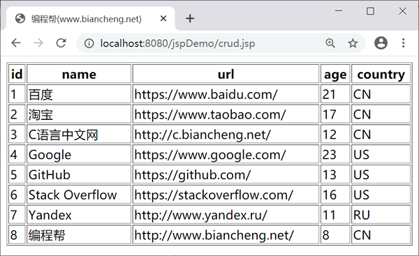
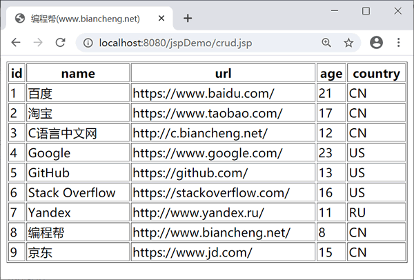
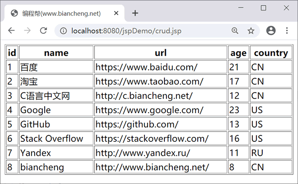

JSP JDBC访问数据库
动态网页的主要特点就是能及时更新数据，这些更新的数据来源于数据库。学习本节内容需要您了解 JDBC，可以使用 JDBC 连接 MySQL 数据库。
本节数据库使用 MySQL 5.7，你可以点击 MySQL 官方网站 下载相应的 jar 包。
注意：MySQL 8.0 及之后的版本与之前的数据库连接有所不同：
MySQL 8.0 及以上版本加载驱动与连接数据库方式如下：
crud.jsp 代码如下：
删除数据
本节数据库使用 MySQL 5.7，你可以点击 MySQL 官方网站 下载相应的 jar 包。
注意：MySQL 8.0 及之后的版本与之前的数据库连接有所不同：
- 首先驱动 com.mysql.jdbc.Driver 更换为 com.mysql.cj.jdbc.Driver。
- MySQL 8.0 及以上版本需要显式关闭 SSL 连接和指定 CST。
MySQL 8.0 及以上版本加载驱动与连接数据库方式如下：
<sql:setDataSource var="snapshot" driver="com.mysql.cj.jdbc.Driver"
url="jdbc:mysql://localhost:3306/test?useSSL=false&serverTimezone=UTC&useUnicode=true&characterEncoding=utf-8
user="root" password="root"/>
下面使用 JSTL 对数据表中的数据进行增删改查。
示例
创建 website 数据表，并插入数据。点击下载 SQL 文件（下载后需要解压）crud.jsp 代码如下：
<%@ page language="java" contentType="text/html; charset=UTF-8"
pageEncoding="UTF-8"%>
<%@ page import="java.io.*,java.util.*,java.sql.*"%>
<%@ page import="javax.servlet.http.*,javax.servlet.*"%>
<%@ taglib uri="http://java.sun.com/jsp/jstl/core" prefix="c"%>
<%@ taglib uri="http://java.sun.com/jsp/jstl/sql" prefix="sql"%>
<!DOCTYPE html>
<html>
<head>
<title>编程帮(www.biancheng.net)</title>
</head>
<body>
<%--
JDBC驱动名、数据库 URL、数据库的用户名与密码
useUnicode=true&characterEncoding=utf-8 防止中文乱码
--%>
<sql:setDataSource var="snapshot" driver="com.mysql.jdbc.Driver"
url="jdbc:mysql://localhost:3306/test?useUnicode=true&characterEncoding=utf-8"
user="root" password="root" />
<%-- 插入数据
<sql:update dataSource="${snapshot}" var="result">
INSERT INTO website (NAME,url,age,country) VALUES ('京东', 'https://www.jd.com/', 15, 'CN');
</sql:update> --%>
<%-- 删除website表中id为9数据
<c:set var="id" value="9" />
<sql:update dataSource="${snapshot}" var="count">
DELETE FROM website WHERE id = ?
<sql:param value="${id}" />
</sql:update>--%>
<%-- 修改website表中id为8数据
<c:set var="id" value="8" />
<sql:update dataSource="${snapshot}" var="count">
UPDATE website SET name="biancheng" WHERE id = ?
<sql:param value="${id}" />
</sql:update>--%>
<%-- 查询数据 --%>
<sql:query dataSource="${snapshot}" var="result">
SELECT * from website;
</sql:query>
<table border="1" width="100%">
<tr>
<th>id</th>
<th>name</th>
<th>url</th>
<th>age</th>
<th>country</th>
</tr>
<c:forEach var="row" items="${result.rows}">
<tr>
<td><c:out value="${row.id}" /></td>
<td><c:out value="${row.name}" /></td>
<td><c:out value="${row.url}" /></td>
<td><c:out value="${row.age}" /></td>
<td><c:out value="${row.country}" /></td>
</tr>
</c:forEach>
</table>
</body>
</html>
运行结果如下：

查询数据
查询数据

添加数据
添加数据

修改数据
修改数据
删除数据
关注公众号「站长严长生」，在手机上阅读所有教程，随时随地都能学习。内含一款搜索神器，免费下载全网书籍和视频。

微信扫码关注公众号